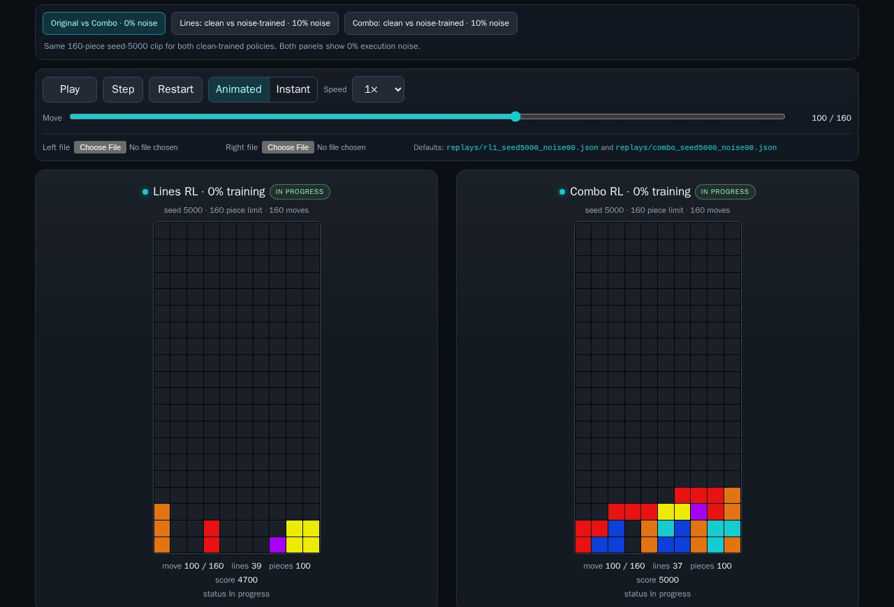
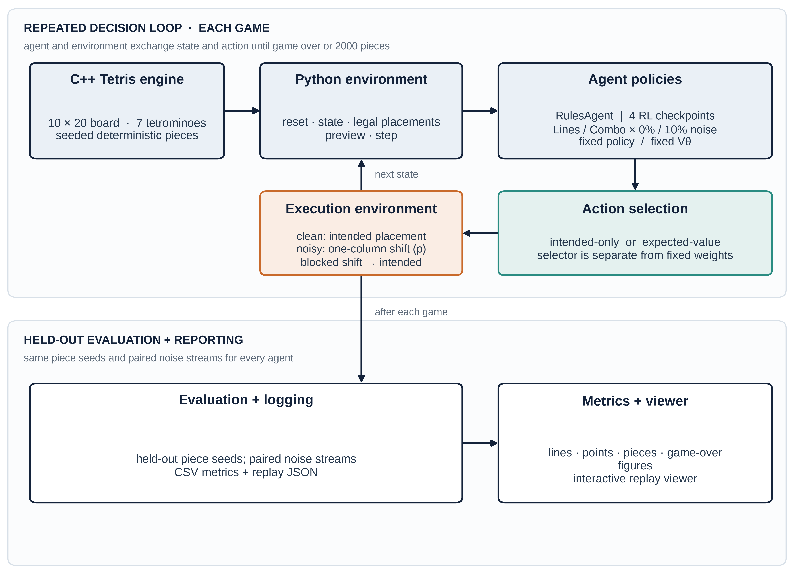
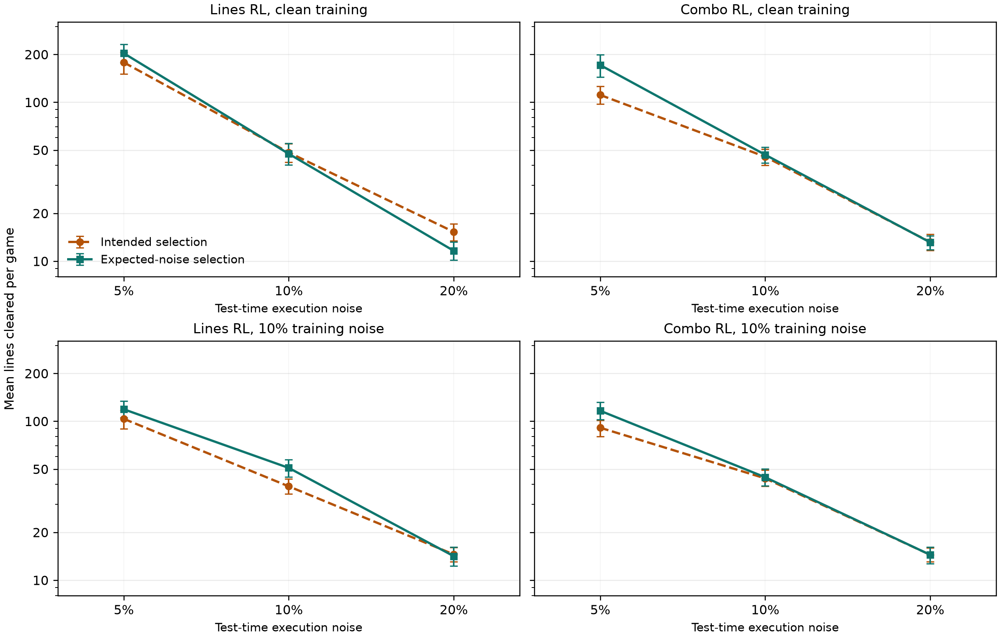
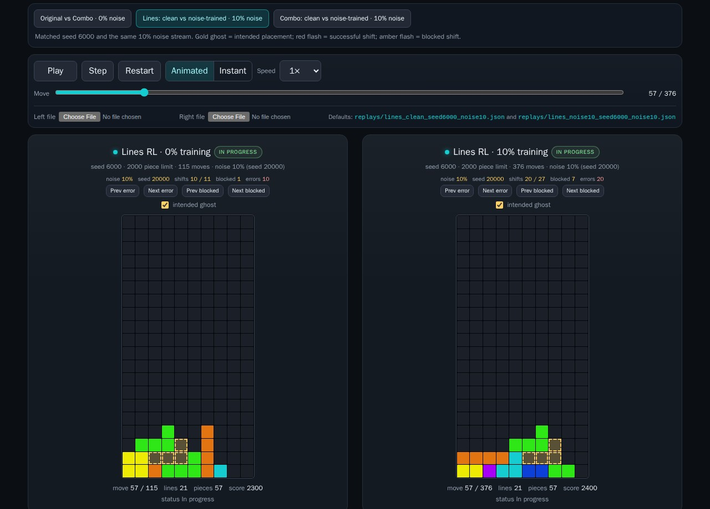

ISSAI FRP 2026 · AI Engineering
Can a small RL agent beat a hand-written Tetris player under execution noise?
The research repository with training code, checkpoints and raw logs remains private. The public repository contains this static page and the replay viewer.

In one sentence: a compact afterstate RL agent beats a hand-written Tetris heuristic at clean play (797.8 vs 740.4 mean lines), but training with 10% execution noise did not make it robust at test time, and the rule used to select moves under a noise model can shift measured performance by tens of lines.
The problem
Tetris is a sequential decision problem with a huge branching factor. A hand-written heuristic that scores holes, height and surface bumpiness is a strong and cheap baseline. Reinforcement learning should be able to improve on it, but a high score in a clean simulator can hide two weaknesses: the policy may not beat a good heuristic, and the score may depend on perfect execution.
We study both questions with a small, reproducible setup. The first benchmark, Study 1, evaluates five agents on held-out seeds under the original intended-placement protocol. The second, Study 2, asks a different question on fresh seeds: when the simulator applies execution noise, should the agent choose the move with the best clean value, or the move with the best expected value under the noise model? The two studies are reported separately because they answer different questions.
How it works
The environment is a C++ 10×20 Tetris engine with the seven standard tetrominoes, a seeded piece sequence and a 2,000-piece cap (800 lines). Python calls into it through a small interface for reset, legal placements, afterstate preview and step. The agent scores every legal placement with four features: cleared lines divided by 4, holes divided by 40, the sum of column heights divided by 200, and surface bumpiness divided by 100.
The value network is deliberately small: 4 inputs, two hidden layers of 64 units and one output. Training uses afterstate temporal-difference updates, a discount factor of 0.99, a replay buffer of 50,000 transitions, batches of 256, Adam at 1e-3 and a target network copied every 500 steps. Exploration is epsilon-greedy. The clean-trained agents use no execution noise. The noise-trained agents use 10% training noise and expected-value targets and selection.
Execution noise models a failed or blocked shift: with probability p, the intended horizontal shift is replaced by a one-column shift left or right with probability p/2; if that shift is blocked by the wall or a stack, the intended placement is kept. This is intentionally simpler than real input latency, rotation errors or dropped pieces. The distinction between Qint and Qexp is the core of the second study.

The five evaluated agents
All four RL agents share the same network, optimizer and wall-clock budget. RandomAgent is not part of the five-agent comparison.
What we found
RL beats the heuristic
The best clean agent reaches 797.8 mean lines, 57.4 lines above RulesAgent’s 740.4. Both clean-trained RL agents are close to the 800-line cap.
Noise training is not a free fix
At 10% test noise, clean-trained agents score 46.0 and 47.3 lines, while the noise-trained agents score 38.9. At 5% the gap is much larger.
Combo changes style
At 0% noise Combo RL earns 110,145 points versus 93,980 for Lines RL with almost the same number of lines, and it uses a different mix of line clears.
The evaluation rule matters
In Study 2, choosing the move with the best expected noisy value can add 60.2 lines at 5% noise, but the effect is not uniform and does not replicate every Study 1 pattern.
Study 1: the original five-agent benchmark
| Agent | 0% noise | 5% noise | 10% noise | 20% noise |
|---|---|---|---|---|
| RulesAgent | 740.4 | 90.1 | 39.8 | 14.3 |
| Lines RL · 0% training | 797.8 | 165.4 | 46.0 | 13.4 |
| Combo RL · 0% training | 796.6 | 140.4 | 47.3 | 13.1 |
| Lines RL · 10% training | 797.6 | 103.9 | 38.9 | 13.4 |
| Combo RL · 10% training | 765.9 | 105.1 | 38.9 | 12.7 |
The clean-trained agents beat the noise-trained agents at 10% test noise by 7.1 lines for the lines reward (95% CI 2.7–11.2) and 8.4 lines for the combo reward (3.1–15.0). At 5% the gaps are 61.5 and 35.3 lines. The noise-trained agents also used about 35% fewer training pieces under the same wall-clock budget (81k and 79k versus 121k and 128k), so training budget is a confound. At 20% every agent collapses to 12.7–14.3 lines.
Study 2: intended vs expected selection on fresh seeds
Study 2 does not retrain anything. It takes the four trained RL agents and evaluates them on seeds 7100–7119 with the same execution-noise model, comparing intended selection Qint with expected selection Qexp. The table shows paired mean differences in favor of expected selection; positive values mean the expected-value rule scores higher under the evaluation noise. This study has no RulesAgent baseline and is not a full replication of Study 1.
| Model | Noise | Difference in mean lines | 95% interval |
|---|---|---|---|
| Combo RL · 0% training | 5% | +60.2 | +29.0 to +91.2 |
| Combo RL · 10% training | 5% | +25.4 | +10.5 to +39.3 |
| Lines RL · 0% training | 5% | +25.2 | −21.0 to +67.7 |
| Lines RL · 10% training | 5% | +15.4 | −3.5 to +35.4 |
| Lines RL · 10% training | 10% | +11.9 | +5.4 to +18.6 |
| Lines RL · 0% training | 20% | −3.7 | −5.7 to −1.9 |
The other 10% and 20% cells were small and uncertain. Two positive post-hoc results from Study 1 did not replicate in Study 2. The safest conclusion is conditional: expected selection can help a lot when the clean policy is badly mismatched to the noise, but it is not a universal improvement and can hurt at high noise.

What the numbers mean
- Clean play: a four-feature afterstate RL agent is enough to beat a hand-written heuristic, and both reward variants are close to the 800-line cap.
- Training noise: under the same wall-clock budget, training with 10% noise did not produce a robust agent. Clean training remained better at 5% and 10% test noise.
- Reward design: the combo reward raises points and changes the line-clear mix, but it does not buy robustness by itself.
- Selection: the expected-value rule can be worth tens of lines, but its benefit depends on the model, the noise rate and the mismatch between training and evaluation.
- High noise: at 20% all agents collapse to roughly 13 lines. Better robustness probably needs test-time adaptation or a stronger noise model, not just more training noise.
Interactive replay viewer

The viewer has three comparison presets: Original vs Combo at 0% noise, Lines clean vs noise-trained at 10%, and Combo clean vs noise-trained at 10%. Play, pause, step, restart, change speed, seek, or jump to the previous/next successful shift or blocked shift. The intended-placement ghost can be switched off.
The replays are recorded simulations, not live neural-network inference. They are short demonstration clips, not the 2,000-piece evaluation games, so their scores are not the paper’s means. Manual JSON upload is still supported.
Limitations and ethics
- Small sample: 20 seeds per Study 1 condition, one training run per cell, and a single wall-clock budget. The intervals are descriptive, not a large-scale significance study.
- One noise model: horizontal shift failures and blocked shifts only. Rotations, soft drops, latency and hardware errors are not modelled.
- Study 2 is not a full replication: it uses fresh seeds and the same four trained models, has no RulesAgent baseline, and some effects are uncertain.
- No test-time adaptation: the agents do not update online. The expected-value selection rule is an inference-time change, not learning during the game.
- No human data: the project uses a simulator and self-generated games only. There are no private photos, voices or personal records.
Paper and reproducibility
The verified manuscript is a LaTeX package. A compiled PDF is not included in this public build because the build environment had no TeX engine. The page keeps the abstract, verified tables, figures and a public-safe copy of the LaTeX source. The training code, checkpoints and raw logs stay in the private research repository.
Cite
@misc{erkenzhe2026tetrisrl,
title = {Tetris RL Arena: Afterstate Reinforcement Learning under Execution Noise},
author = {Erkenzhe},
note = {FRP 2026, AI Engineering track, ISSAI, Nazarbayev University},
year = {2026},
url = {https://yerkenje.github.io/tetris-rl-arena-page/}
}